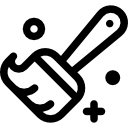
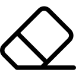
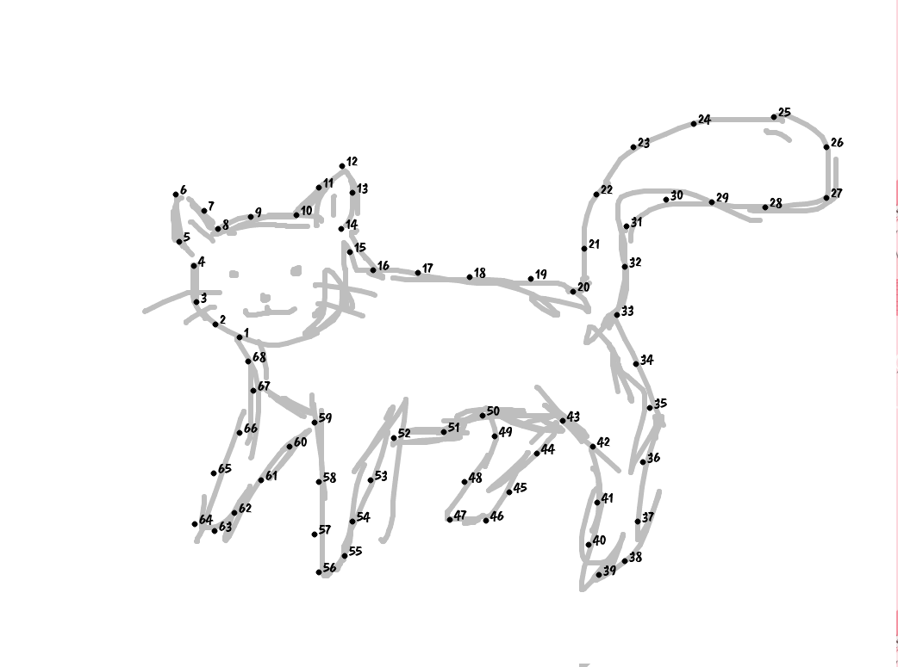
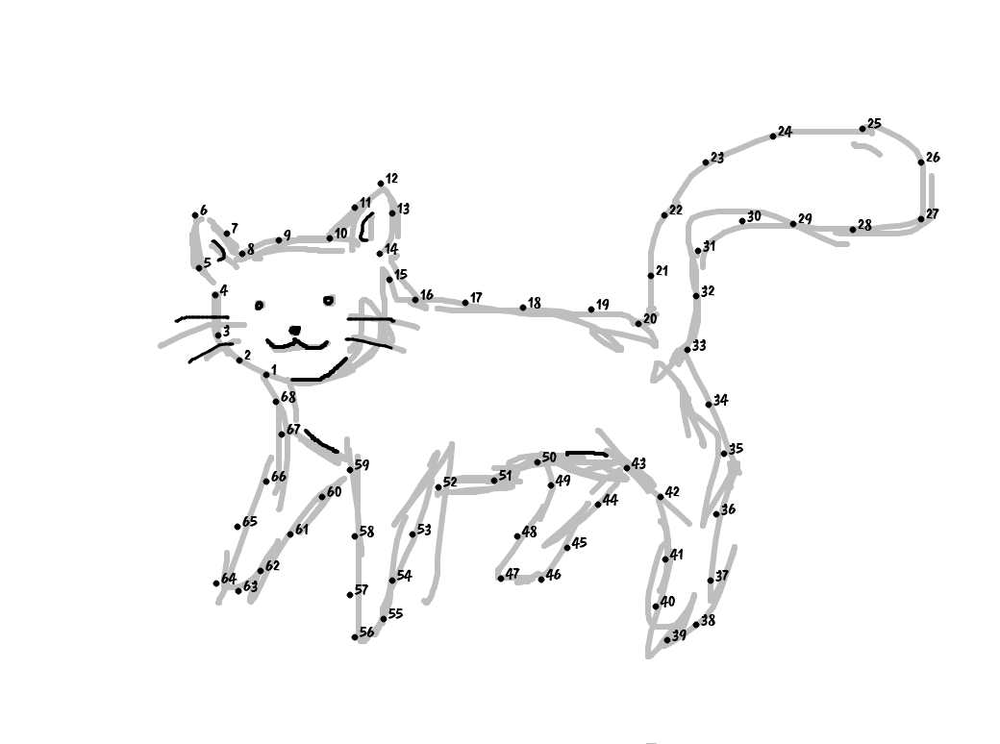
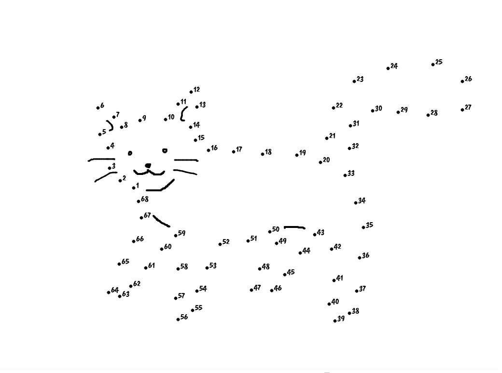

Stwórz własny rysunek typu "połącz kropki".
Narysuj szkic swojego rysunku.
Nie musisz przejmować się szczegółami.
Nie musisz przejmować się szczegółami.

Szkic nie wyszedł? Przycisk po prawej wyczyści płótno i można zacząć od nowa.
Pora nanieść kropki na rysunek. Możesz eksperymentować z wielkością kropek i cyfr. W razie niepowodzenia wyczyścisz płótno przyciskiem po prawej stronie.
Nadeszła pora na dodanie do projektu elementów i detali, które nie są obrysem postaci np. oczu, uśmiechu itp.
Pędzel
Gumka

lub
Narzędzie do tworzenia obrazu typu "połącz kropki"
Etap 1
Narysuj szkic. Nie musisz przykładać uwagi do szczegółów.
Etap 2
Nanieś kropki na obrys postaci. Ważne jest umieszczenie kropek na załamaniach linii.
Etap 3
Narysuj linie znajdujące się wewnątrz postaci. Tutaj warto się postarać.
Etap 4
Wyczyść linie pomocnicze narysowane podczas szkicu i ciesz się swoim dziełem.
